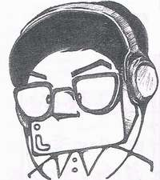

Welcome to Koichi Suzuki's page at PGX2 buildfarm. Koichi have been leading Postgres-XC and X2 project and the designer of its architecture.
Koichi Suzuki is a fellow at NTT DATA Intellilink Corporation. He is in charge of database and opensource software. He is also a principal of engineering professionals in NTT DATA Group companies. Here is his official page (in Japanese).
His profile will be found in his LinkedIn page too.
Koichi Suzuki has good connection in China. When he begain current Postgres-XC work, he worked with Institute of Software Chinese Academy of Sciences in Beijing to get strict backgrounds to the idea.
He has given several presentations in Chinese PostgreSQL conference, as well as Database Technology Conference China 2015 , held in Beijing.
Koichi has been a weekend musicial for very long time. He is very active player in classical symphony orchestra and chamber orchestra. His activity includes An Die Musik Kammerorchester , Asao Philharmoniy Orchestra and Holz group (a group of German/Austria clarinet player).